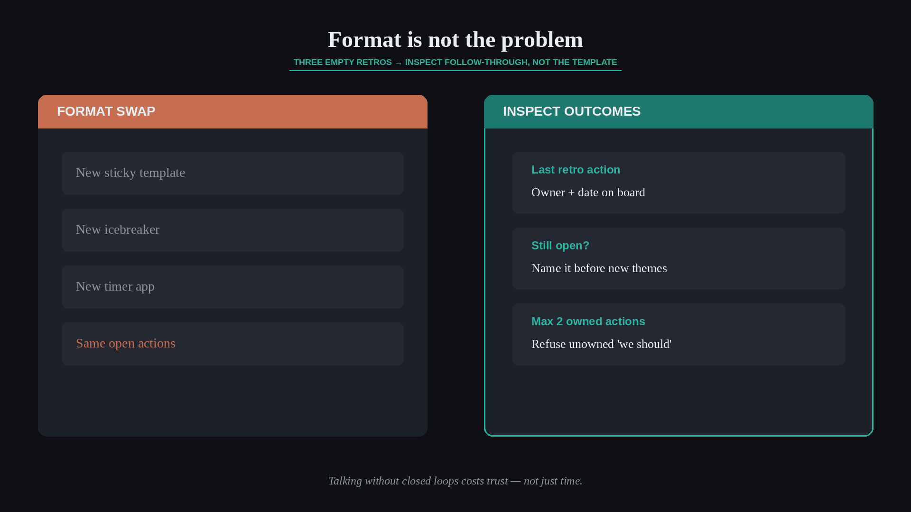

If retros change nothing, the format is not the problem
Source: Scrum.org (@Scrumdotorg) · Steven Deneir
original post
What it claims
If your last three retrospectives changed nothing, the format is not the problem. Steven Deneir (via Scrum.org): the ritual quietly costs time and trust when talking never turns into change. The fix is the fundamental — inspect outcomes of prior actions, own follow-through — not a new sticky-note template.
Why it matters for a PO
POs sit in Sprint Retrospectives that feel productive and then watch the same impediments return. New formats create the illusion of progress while the Product Backlog, DoD, and team agreements stay untouched. Empiricism requires closed loops: what we said we would change must show up in the next Sprint’s working agreements and backlog decisions.
3 takeaways
- Three empty retros in a row point to accountability and follow-through — not to a weak icebreaker.
- Start every retro by inspecting what changed since the last one; if nothing did, name that before new ideas.
- One owned action on the board beats ten unowned “we should” notes.
Practice this week
Before the next Sprint Retrospective, list the actions from the previous two retros and mark each Done / Still open / Abandoned. Open the meeting with that list. Pick at most two open items with named owners and a check-in date inside the next Sprint — refuse new themes until those have a real home.